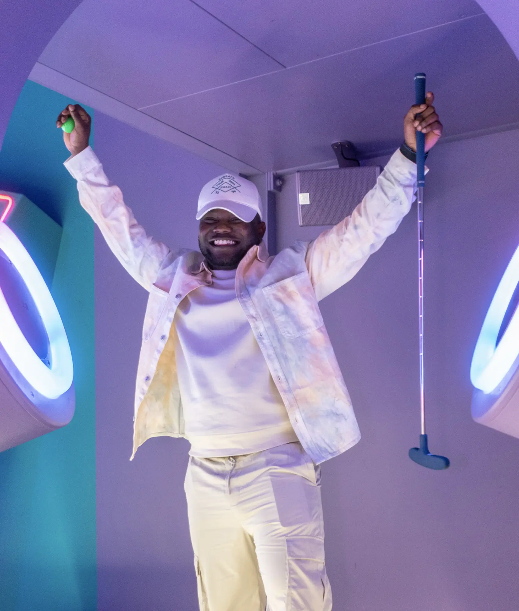
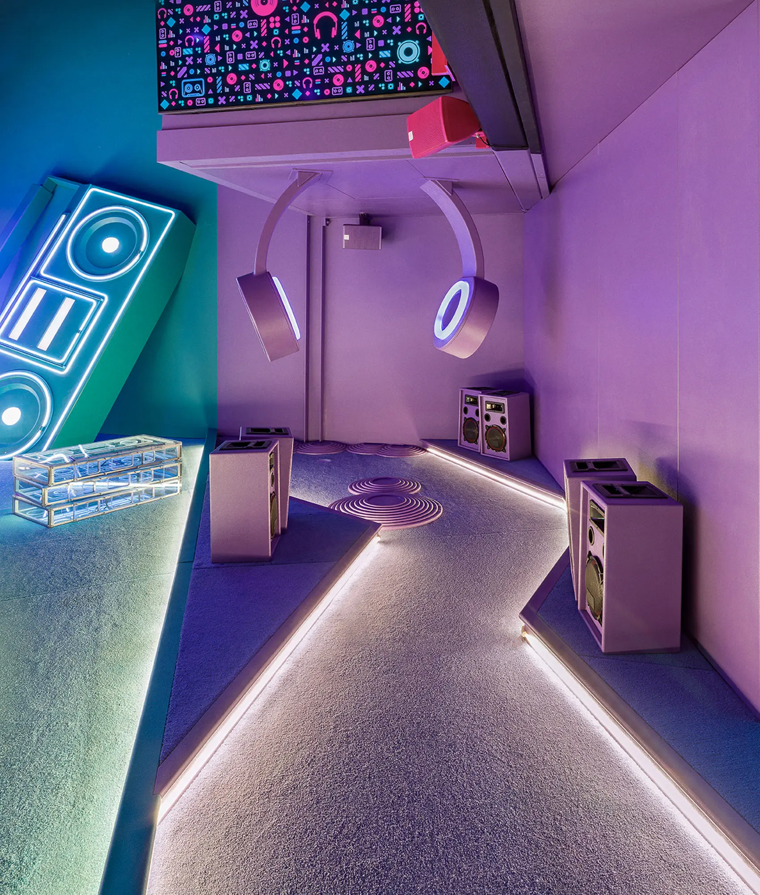
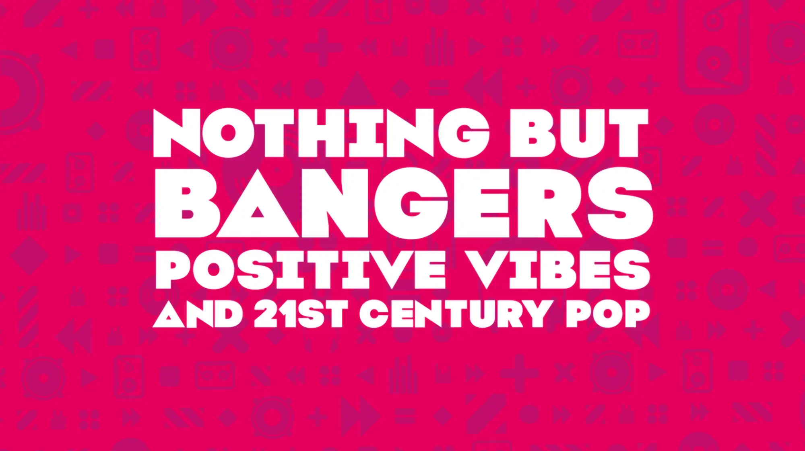
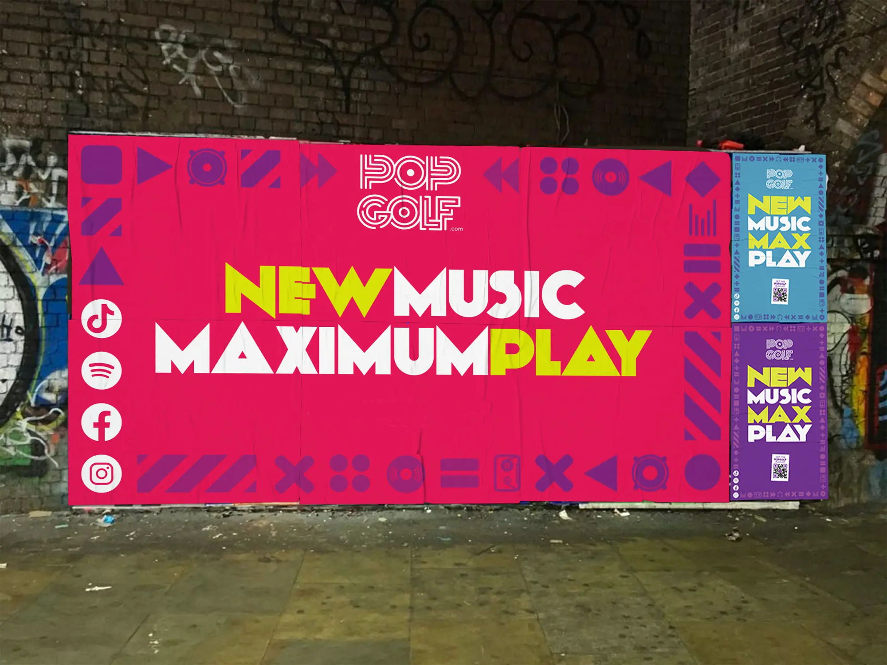
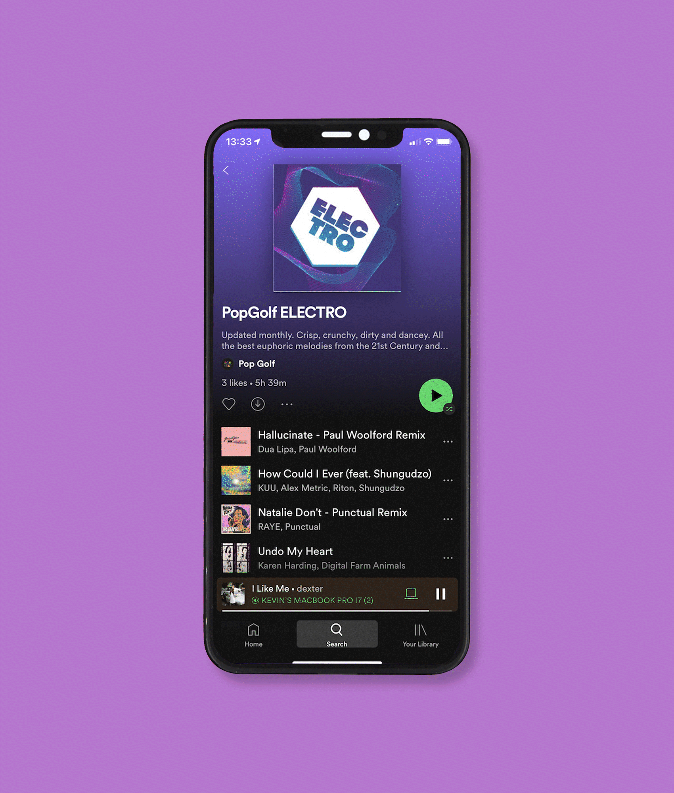
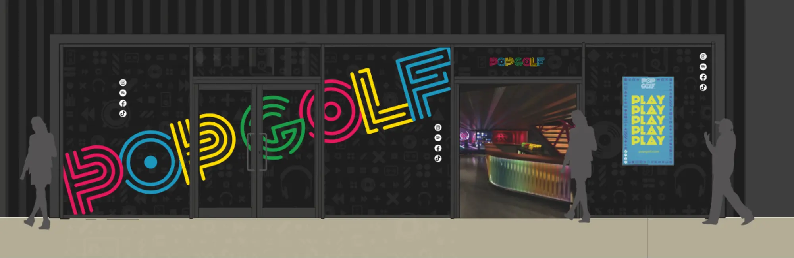
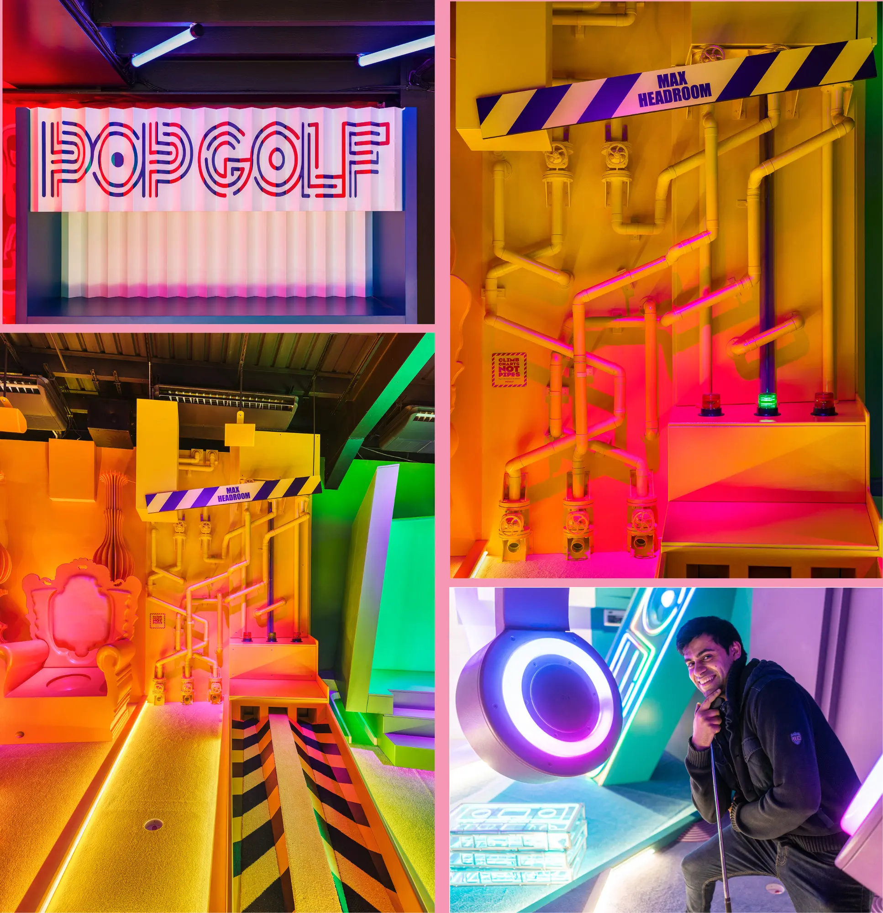
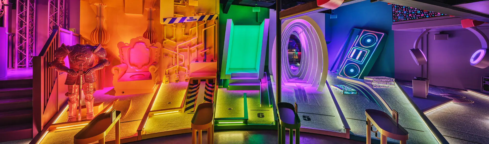

Experiential & brand creation
Pop Golf
Crazy golf in a bar is the latest thing, but what happens when it's not? We harnessed the zeitgeist of pop music to create an award winning new franchise that will always be interesting.

The work
Our Invention
Mini Golf Never Sounded So Good
Our client came to us with an available leisure unit at BOXPARK Wembley and the ambition to launch an outstanding new crazy golf franchise. We saw the opportunity to create an experience that never gets old.
To always be current Pop Golf puts new music before everything else. Expertly curated playlists soundtrack the experience, the tone of voice behaves like a pop blog, and the visual identity stems from the landscape of 21st Century pop culture.
Purpose-built for social sharing, our music-video themed set design combines challenging gameplay with Insta inspiration and the ultimate Tik Tok backdrop.
Working with indie labels we curate monthly reviews, interviews and promo spots that live online and in social. If it’s new we know about it, and if it’s hot, it’s here.
The venue was designed alongside king of crazy golf, Zachary Pulman, and built-in close collaboration with Cod Steaks and Realise Productions. Our wonderful playlists were directed by music consultancy Tin Drum.







